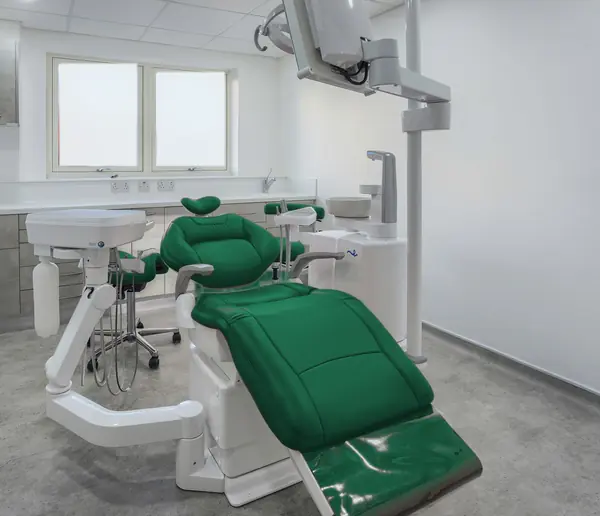
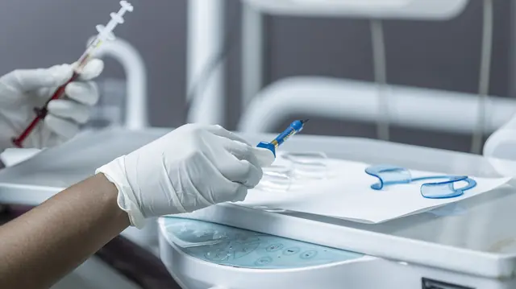
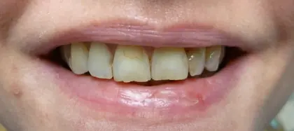
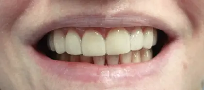
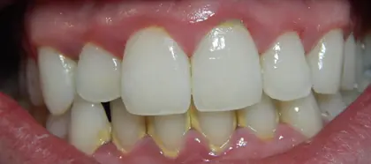
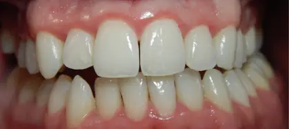
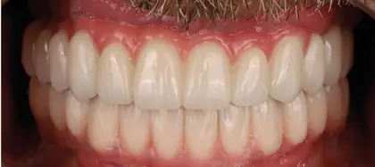

Foto referencial
Tu dentista en Chorrillos.
Te explicamos cada paso y te damos el precio antes de empezar.
Lunes a sábado, desde las 9:00 a. m.
Av. Ejemplo 123, Chorrillos
Tratamientos
Toda atención empieza con una revisión. Elige un tratamiento y pide tu cita con ese motivo.
-
Urgencias
Dolor, un golpe o la muela del juicio. Si estamos abiertos, hacemos lo posible por verte el mismo día.
Pedir cita por una urgencia (se abre en otra pestaña) -
Limpieza
Limpieza con ultrasonido y revisión completa. Lo ideal es venir cada seis meses.
Pedir cita para una limpieza (se abre en otra pestaña) -
Curaciones y endodoncia
Tratamos la caries a tiempo. Sacar la muela es la última opción.
Pedir cita para una curación (se abre en otra pestaña) -
Ortodoncia
Brackets y alineadores, con el plan y el costo claros desde el primer día.
Pedir cita para una evaluación de ortodoncia (se abre en otra pestaña) -
Estética
Blanqueamiento y carillas, después de revisar que tus dientes estén sanos.
Pedir cita para una consulta de estética dental (se abre en otra pestaña) -
Implantes
Reponemos dientes perdidos, con un plan por etapas.
Pedir cita para una evaluación de implantes (se abre en otra pestaña)
Cómo atendemos

-
Respetamos tu hora.
Si nos atrasamos, te avisamos por WhatsApp.
-
El precio va primero.
Te damos el presupuesto por escrito y tú decides. Sin cobros que no esperabas.
-
Pagas a tu manera.
Yape, Plin, tarjeta o efectivo. Los tratamientos largos se pagan por partes.
Así es tu cita
Te mostramos cómo te atendemos antes de que vengas.
Videos de ejemplo
-
Te explicamos tu radiografía
-
Dejamos todo listo antes de que entres
-
Revisamos sin apuro
Videos de otro consultorio, solo como ejemplo. En la web de un consultorio van los suyos.
Quién te atiende
Equipo de ejemplo
«Muchos llegan con miedo, o después de años sin venir. Aquí nadie te va a retar. Primero conversamos y, antes de tocar nada, te digo lo que veo y cuánto cuesta.»
Dra. Lucía
Odontología general y estética
Colegiatura 00000
También te atienden
-
Dr. Marco
Ortodoncia (brackets) e implantes
Colegiatura 00000
Pedir cita con el Dr. Marco (se abre en otra pestaña) -
Dra. Paola
Odontopediatría (niños) y endodoncia (conductos)
Colegiatura 00000
Pedir cita con la Dra. Paola (se abre en otra pestaña)
Antes y después
Cada boca es distinta. En tu primera cita te decimos qué se puede lograr en la tuya.
Casos de ejemplo
-

Antes 
Después Carillas
En los dientes de adelante, para mejorar forma y color.
-

Antes 
Después Limpieza
Se retira el sarro. La segunda foto es de nueve días después.
-
Antes 
Después Implantes
Dientes fijos sobre implantes, cuando quedan pocas piezas.
Fotos de otros consultorios, solo como ejemplo. En la web de un consultorio van sus casos, con permiso de cada paciente.
4,9 en Google, con 128 reseñas
Reseñas de ejemplo
-
«Fui por un dolor de muela y me atendieron el mismo día. Me explicaron todo antes de empezar.»
Carla R.
-
«Me dieron el presupuesto por escrito y al final pagué exactamente eso.»
Jorge M.
-
«Mi hijo entró llorando y salió con su sticker. Volvemos en seis meses.»
Rosa T.
Dónde estamos
Av. Ejemplo 123, Chorrillos
A dos cuadras de la municipalidad. Hay estacionamiento en la puerta.
- Lunes a viernes
- 9:00 a. m. a 8:00 p. m.
- Sábado
- 9:00 a. m. a 2:00 p. m.
- Domingo
- Cerrado
Preguntas frecuentes
¿Cuánto me va a costar?
Depende de lo que necesites. Antes de empezar te damos el presupuesto por escrito y tú decides.
¿Atienden urgencias el mismo día?
Hacemos lo posible, si estamos abiertos. Escríbenos por WhatsApp, cuéntanos qué pasó y te decimos a qué hora venir.
¿Puedo pagar por partes?
Sí. Los tratamientos largos, como la ortodoncia o los implantes, se pagan por etapas. Aceptamos Yape, Plin, tarjeta y efectivo.
¿Atienden niños?
Sí, tenemos odontopediatra. La primera cita es para que conozca el consultorio sin apuro.
¿Trabajan con seguros?
Depende del seguro. Escríbenos con el nombre del tuyo y te confirmamos si lo recibimos.
¿Te duele algo
o te toca control?
Escríbenos y te respondemos con tu cita.
Pedir cita por WhatsApp (se abre en otra pestaña)Lunes a viernes de 9:00 a. m. a 8:00 p. m. Sábado hasta las 2:00 p. m.
En esta muestra, el mensaje le llega a Angel Cancho con un aviso de prueba; en la web de un consultorio, a su WhatsApp.
¿Tienes un consultorio dental?
Esta página es una muestra. La tuya, con tu nombre, tus fotos y tu WhatsApp, cuesta S/ 900 y puede estar lista en 5 a 7 días hábiles.
Ver qué incluye tu web